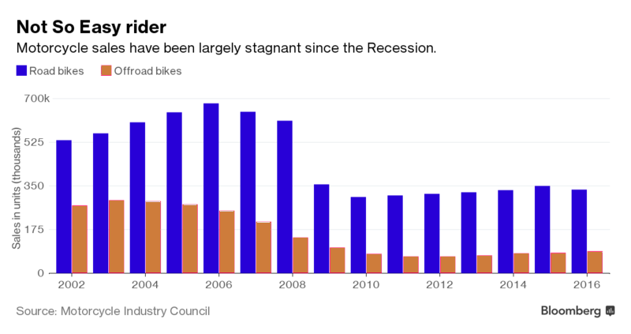
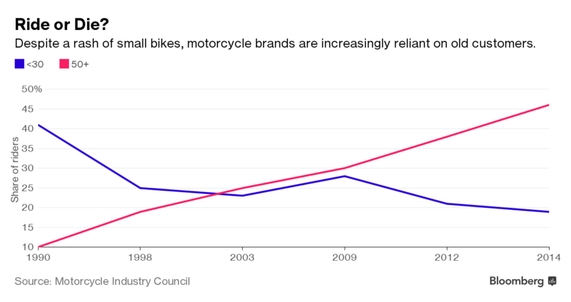

Luís Oliveira
Hunsk Engines
Uma questão de autenticidade
Autenticidade
"Authentic marketing is not the art of selling what you make but knowing what to make"
Philip Kotler. Marketing Management: Analysis, Planning, Implementation and Control, 1967.
O que sabemos?
Motociclos são um bem de "luxo"
Hunsk está em declínio
Falta de liderança do CEO
Estratégias de expansão sem sucesso
A empresa não explora oportunidades de mercado
Marty Echt
Novo Diretor de Marketing
Quer voltar às origens
Nova estratégia de Marketing
Quer transmitir emoção aos consumidores!
É um apaixonado por motos e tem paixão pelo produto
Bruce Weindruch, CEO @ History Factory
História da marca pode ser determinante!
O objetivo não é emoldurar o passado, mas sim conhecer os valores originais da Hunsk
Gillian Arnold, Consultora em Joalheria de luxo
Gordon McMaster deve empenhar-se mais na nova campanha
CEO deve combater a distância entre os colaboradores e a marca
Líderes de Marketing devem ter paixão e conhecer profundamente os produtos
James Gilmore & Joseph Pine, Strategic Horizons
É preciso conseguir manipular a perceção do consumidor
Autenticidade é fruto da percepção individual
Marty compreende verdadeiramente a marca
O esforço dos trabalhadores reflete-se no produto
O consumidor sente paixão da empresa pelo produto
O que nos diz o mercado?


Há uma oportunidade de apelar a público mais jovem
Há também o desafio de enfrentar um mercado relativamente estagnado
In 1998, only 8% of motorcycle owners were women. By 2014, the most recent year in which the council has statistics, female ownership had increased to 14%.
https://www.usatoday.com/story/money/business/2017/09/01/women-help-rev-up-motorcycle-industry/573631001/
Ainda haverá espaço para a Hunsk?!
Cohn & Wolf
- 9/top100
- 6/top20 Suécia
- 20/top20 China
- 18/top20 Hong Kong
- 8/top20 Índia
20/top100
18/top20 USA
30/top100 @ 2016
41/top100
8/top20 Indonésia
33/top100 @ 2016
Alguns números
BMW
Volume de negócios: $83 B
Posição 21 @ Forbes Most Values brands
Honda
Volume de negócios: $113.3 B
Posição 26 @ Forbes Most Valuable brands
https://www.forbes.com/powerful-brands/list/https://www.holmesreport.com/research/article/authenticity-marketers-may-be-doing-it-wrong
Cumprir promessas - 70%
Responsabilidade Social - 57%
Responsabilidade ambiental - 55%
E na prática?
?
Quais os nosso valores
Qual a nossa missão
Quais os nossos compromissos
!
Qualidade
?
O que procura o consumidor
!
Influenciar a Percepção
!
Transparência & Responsabilidade
!
Social Media
Considerações
Não chega projetar autenticidade,
é preciso mudança organizacional
É uma questão de estratégia, de valores, de liderança e é preciso conhecer o mercado
A autenticidade da marca é feita através de Marketing engenhoso & habilidoso
A autenticidade organizacional é conseguida através de Estratégia e (re)definição de uma visão, missão e objetivos organizacionais claros
Marketing atutêntico demonstra ser bem sucedido,
especialmente junto dos millennials
Os grandes competidores estão a adotar esta estratégia
É importante sentir paixão
Se não tivermos paixão pelo nosso produto, o cliente também não terá
Adoptar estratégia people-to-people
Batalhar a desconfiança
Partilha orgânica de informação
Valorização do cliente
Gosto TOTAL pela Marca